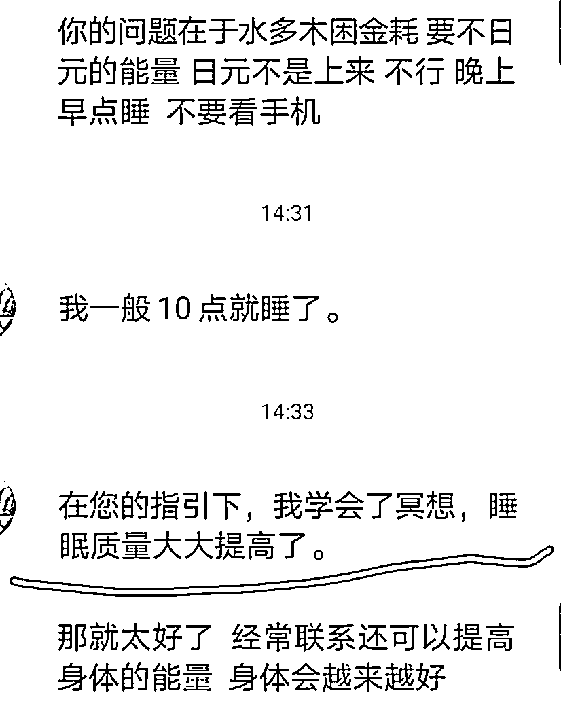

来源：https://m7vzu30d1s.feishu.cn/docx/ZlCYdQ4VcoNX2yxLtDNcx4ignwe
新老圈友大家好，我是樾樾（yueyue），感恩在生财平台让你我相识
在小红书做了多个赛道商家流量合作，团队自营盘在深耕身/芯灵疗愈行业，是心理咨询师和易学爱好者
目前变现产品有：
针对c端学员：提供多种线上提升课程：如正念冥想、能量提升等课程体系；1对1咨询产品；再根据学员情况推荐适合他的能量产品。现有海南产的沉香、能量石、五行流量手串、天珠等产品。
针对b端创业者：提供项目指导、cps合作、讲师.咨询师合作、疗愈师IP培训，更多合作方式开放中..
往期精华帖：
今天要分享的是带我的合伙人新起抖音账号的过程，一天的时间就有3个精准的咨询转化，每单398元。或许对大家有帮助。
这批账号是准备用废号流玩法，测小/国流量，本意是给这部分流量卖我们的沉香、琉璃、朱砂等产品，买课赠咨询。
完全标准的流程化，分享给有需要的圈友！ 今天分享的是抖音，关于小红书起号以及更多行业内的信息，之后再多多分享

确保使用的设备干净，该设备没有被封过号。如果曾经被封过号，需要刷机后重新注册。
准备账号数量：同时启动3个号，包括普通厅卡和流量卡。
网络环境：确保网络干净，以保证账号的正常运营。
也可以将账号登陆给各个地方不同的人，并给他们提供相关素材，要求他们每天发布内容，合作分润。
具体操作包括：
搜索相关领域的内容，如国学、八字、易学、道友等。
模拟正常用户的行为，刷相关领域的视频，进行点赞、评论、关注等操作。在关注时，最好关注那些很久不更新的号以及新的同行账号，这样可以避免被新的同行发现拉黑。
刷首页时，如果刷到和赛道无关的内容，通通选择长按不感兴趣，直到首页推送的都是相关内容为止。
优选半个月内起号的低粉爆款账号的内容，因为这种账号一般是同行也在新测的内容形式，具有较高的参考价值。
选择近期一周点赞量最多的图文，这些内容往往更能吸引用户的关注。
进行像素级模仿，包括模仿账号的包装，如头像、简介、昵称等，使账号在外观上与优质账号相似。
关注评论区置顶内容和小号水军带节奏的内容，学习其中的互动方式和引导策略。
在制作素材时，模仿有效的互动引流方式，例如将微信号设置成合集的名字等，以及采用群聊发送微信号的方法。
准备20条内容库，在量不多的情况下，可以直接手动采集。可以使用截图、文案提取等工具，将相关内容统一放在自己的文案库里，以便随时调用。
图文内容可以使用可画等工具进行批量制作，提高制作效率。
按照对标账号的发布时间进行发布，以适应平台的流量规律和用户习惯。
对账号进行7天的测试，如果账号的流量表现良好，即跑出去了，可以加大发布量，并优化素材、优化敏感词等，尽量拉长账号的生命周期。
如果账号流量差，直接注销重起，重新进行养号和运营。
以上就是今天分享的我们内部起号方法~有关国/学、疗愈等赛道内容，我后续争取再多做分享~有行业内的圈友可以多多找我交流，一起进步
我一直在一线，录课、做咨询、研究流量、学新东西、开会、找人才、找货、谈合作....等等等等，还达不到一些前辈们一天只工作很少的时间的状态😂我再努努力！
今天百忙之中做个小分享，希望对大家有用！感恩生财！